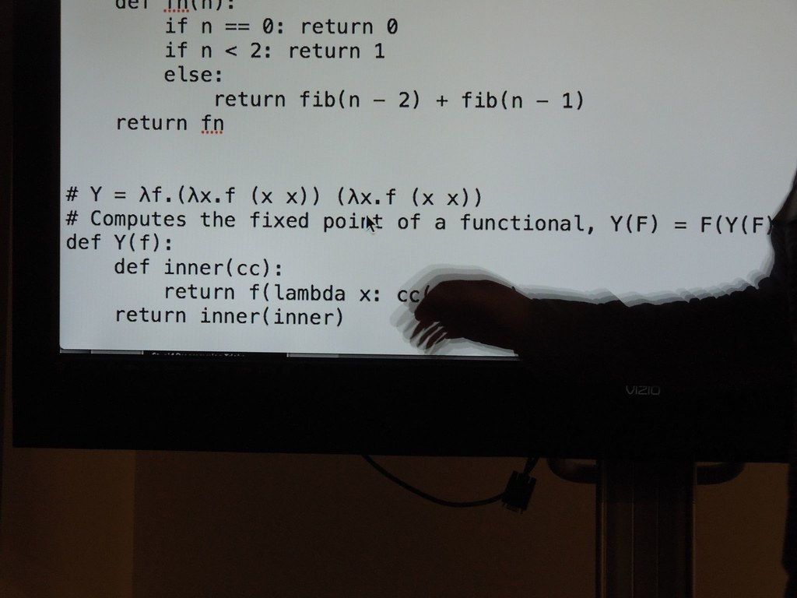

Category Theory and Functional Programming

"Lambda Calculus" by thekirbster is licensed under CC BY 2.0.
Throughout my mathematics undergraduate studies, I have come across several concepts that made me
realize how abstract mathematics can be and for the most part, once I understood a particular topic, despite
its abstractness, I could see why this was important and how it could be applied either within mathematics,
outside or even both, which is usually the case. However, I recently came across something called Category
Theory. This was important for me as I needed a foundational understanding at the very least to follow
a PhD seminar I have been attending recently, but once I started to learn what it was, the more I began to
question myself: "what is this for?". Thankfully, I wasn't alone on this, in fact, from what I have come across
thus far, it seems that the term "abstractness" and "Category Theory" seems to go hand in hand; there is even
a term "abstract nonsense" on
Wikipedia that literally describes particular methods related, but not exclusive to, category theory.
The point here is, that I simply could not see how this could be useful. But before I dive into the connection
between category theory and programming, it's best for me to first lay out some definitions on what this
encompasses. We first take a look at two things: what a category is, and what a functor is.
Categories
To put it simply, a category is a collection of objects and arrows between those things, together with a rule for composing arrows. Let us define this formally.Formally, a category \(\mathcal{C}\) consists of the following:
- A collection of objects denoted by \(\operatorname{ob}(\mathcal{C})\) — these may be sets, topological spaces, groups, states (the definition does not constrain what they "really are").
- For each pair of objects \(A,B \in \operatorname{ob}(\mathcal{C})\), a collection \(\mathcal{C}(A,B)\) of morphisms from \(A\) to \(B\) — these can be group homomorphisms, functions between sets, proofs between propositions etc.
-
A rule for composition: for each \(A,B,C \in \operatorname{ob}(\mathcal{C})\), there exists
a function \(\mathcal{C}(B,C) \times \mathcal{C}(A,B) \to \mathcal{C}(A,C)\) defined by \((g,f) \mapsto
g \circ f\). We can visualize the composition \(g \circ f\) via the diagram:

- For each object \(A \in \operatorname{ob}(\mathcal{C})\), there exists an identity morphism \(\mathrm{id}_A\) of \(\mathcal{C}(A,A)\) which can be seen as mapping from one object to itself.
- Associativity of Composition: for each \(f \in \mathcal{C}(A,B), \ g \in \mathcal{C}(B,C)\) and \(h \in \mathcal{C}(C,D)\), we have \((h \circ g) \circ f = h \circ (g \circ f)\).
- Identity Laws: for each \(f \in \mathcal{C}(A,B)\), we have \(f \circ \mathrm{id}_A = f = \mathrm{id}_B \circ f\).
For example, consider the category we shall denote as \(\operatorname{Set}\). The objects here are sets and the morphisms are functions between the sets. This is a valid category since, if \(f: A \to B\) and \(g : B \to C\) are two functions mapping one set to another, the composite \(g \circ f : A \to C\) is again a function. Furthermore, composition of functions are defined to be associative and each set has an identity function, i.e. \(\mathrm{id}_A: A \to A\) is a function that maps the set \(A\) to itself.
Now consider another example, we shall denote as \(\operatorname{Grp}\). The objects here are groups and the morphisms are group homomorphisms, i.e. function \(f:G \to H\) such that \(f(xy) = f(x)f(y)\) for all \(x,y \in G\). The compositions are the composition of homomorphisms, which again is a homomorphism, and we also have the identity homomorphism \(\mathrm{id}_G(g) = g\) for all \(g \in G\).
These are just two examples of many; we can have objects to be topological spaces with their morphisms being continuous functions and we could also have vector spaces as objects along with their linear transformations. The variety here shows how general the notion of a category is; almost any mathematical structure that has some "objects" and "structure-preserving transformations" forms a category.
Functors
Similar to how we have sets that map to other sets via a function, we have functors that behave as the structure-preserving mappings between categories.Let \(\mathcal{C}\) and \(\mathcal{D}\) be categories. A functor \(F: \mathcal{C} \to \mathcal{D}\) consists of the following.
- A function \(\operatorname{ob}(\mathcal{C}) \to \operatorname{ob}(\mathcal{D})\) written \(C \mapsto F(C)\) where \(C\) is an object in \(\mathcal{C}\).
- For each \(C, C' \in \mathcal{C}\), we have a function \(\mathcal{C}(C,C') \to \mathcal{D}( F(C), F(C'))\) written \(f \mapsto F(f)\).
- Identity Preservation: \(F(\mathrm{id}_A) = \mathrm{id}_{F(A)}\).
- Composition Preservation: \(F(g \circ f) = F(g) \circ F(f)\).
Consider the canonical example of a functor that "forgets structure"; \(U:\operatorname{Grp} \to \operatorname{Set}\). To every group \(G = (|G|, \cdot)\), assign the underlying set \(|G|\); that is, its set of elements. If \(f:G \to H\) is a group homomorphism, then assign the same function \(U(f) : |G| \to |H|\). This works since every homomorphism is, in particular, a function between the underlying sets. This turns out to be a functor since the identity homomorphisms become identity functions and composition of homomorphisms translates into a composition of functions. Observe that a homomorphism requires the group operation to be preserved, but once mapped onto \(\operatorname{Set}\), while we are able to see the elements, we have now "forgotten" the group operation.
The following is a particularly interesting example which treats categories as objects themselves. First, let us define the opposite or dual category denoted by \(\mathcal{C}^{\operatorname{op}}\). The definition here is simple; \(\mathcal{C}^{\operatorname{op}}\) is the category obtained by reversing the direction of every morphism in \(\mathcal{C}\). To be more precise, the objects and the identity morphisms remain unchanged, i.e. \(\operatorname{ob}(\mathcal{C}^{\operatorname{op}}) = \operatorname{ob}(\mathcal{C})\) and reversing \(A \to A\) gives the same morphism. However, for any objects \(A, B\), we have \(\mathcal{C}^{\operatorname{op}}(A,B) = \mathcal{C}(B,A)\) — arrows go the opposite direction.
We can now construct a functor \(\operatorname{Cat} \to \operatorname{Cat}\); a functor between categories of categories. An example of this is the category functor \((—)^{\operatorname{op}} : \operatorname{Cat} \to \operatorname{Cat}\) where the objects are \(\mathcal{C}\mapsto \mathcal{C}^ {\operatorname{op}}\) and the morphisms are the functors themselves, where a functor \(F : \mathcal{C} \to \mathcal{D}\) is sent to \(F^{\operatorname{op}}: \mathcal{C}^{\operatorname{op}} \to \mathcal{D}^{ \operatorname{op}}\) defined the same way on objects and arrows.
At this point, category theory begins to feel quite ridiculous. Up until now, it seems reasonable that we are able to map sets to sets, groups to groups, or topological spaces to topological spaces. However, the moment we introduced functors, especially ones such as
Natural Transformations
Before we move onto the applicability, let us introduce one final concept called natural transformations. Where functors relate categories, natural transformations relate functors. Given two functors \(F, G: \mathcal{C} \to \mathcal{D}\), a natural transformation \(\eta : F \implies G\) assigns to every object \(A\) of \(\mathcal{C}\) a morphism \(\eta_A : F(A) \to G(A)\), such that for every morphism \(f:A \to B\) in \(\mathcal{C}\), the following diagram commutes:
Functional Programming
In a pure functional language (Haskell, OCaml, the \(\lambda\)-calculus), everything begins with types. A type characterizes the structure and behavior of values:- \(\texttt{Int}\) describes integers.
- \(\texttt{Bool}\) describes truth values (true or false).
- \(\texttt{(A,B)}\) describes pairs.
- \(\texttt{A -> B}\) describes functions.
- \(\texttt{[A]}\) describes lists.
Furthermore, what truly distinguishes functional programming from imperative programming languages such C/C++, Java and Python, is purity. A pure function is one that always returns the same output for the same input, has no side effects — cannot mutate state, perform I/O or depend on external conditions, and it does not depend on the order of evaluation. This makes a pure function exactly like a morphism in mathematics: \(f:A \to B\). The following viewpoint is what allows the category-theoretic interpretation in functional programming work well: functional programmers treat programs as mathematical functions as opposed to instructions to the machine.
We saw earlier that we can compose two functions. In code, we can write this as:
\(\texttt{(g.f):: A -> C}\)
\(\texttt{(g . f)x = g(fx)}\)
We now shift our focus on Haskell specifically. Here, we observe how type constructors can be treated as structure-preserving maps. Haskell types such as \(\texttt{Maybe}, \ \texttt{List}, \ \texttt{Tree}, \ \texttt{IO}\) etc. are not simply containers that hold some values, but they are in fact type-level functions. Each takes a type \(A\) and produces a new type \(FA\). Consider the type \(\texttt{Maybe}\). The type construct sends a type \(A\) on the type \(\texttt{Maybe} \ A\), and a function \(f: A \to B\) to a function
This recurring pattern of preserving the computational or structural shape while transforming the values themselves is exactly what it means for a type constructor to be a functor. A Haskell functor is, in general, nothing more than a functor